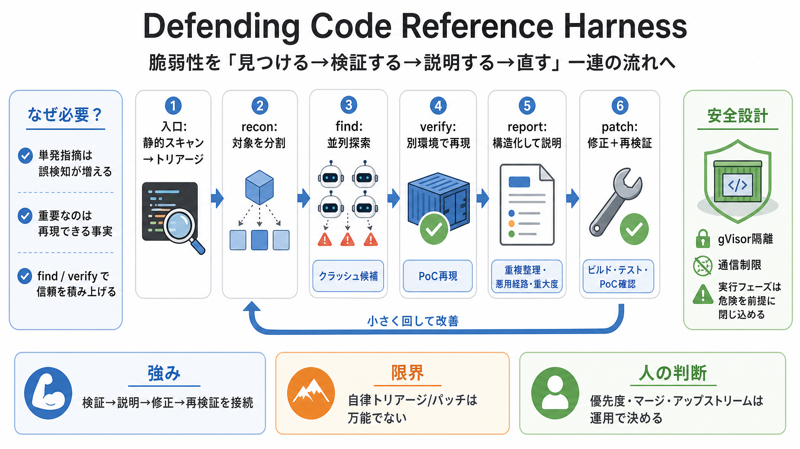

Securing Claude Managed Agents - Pluto Security
# Securing Claude Managed Agents: What You Need to Know Before Going to Production. Claude Managed Agents is Anthropic’s…

Claudeで防御を進める
Anthropicのオープンソース参照実装が示すのは、「脆弱性を見つける→検証する→説明する→直し方を試す」までを一連のパイプラインにする設計です。
単発指摘の限界
脆弱性の候補は簡単に増えますが、重要なのは「再現できる事実」まで積み上げることです。そのため実装は find / verify の段階で“再現性”を重視します。
危険は“実行”から
段階ごとに「コード実行の有無」が変わり、実行を伴うフェーズは危険になり得ます。そこでターゲット実行は gVisor サンドボックス内へ閉じ込める前提が明記されています。
日本語補足：Threat Model（脅威モデル）→「何が起きたら困るか」を先に固定し、隔離・通信制限でリスクを抑えます。
中核ループ
中心は「recon → find → verify → report → patch」のループです。入口では静的スキャン→トリアージも行い、探索の対象を絞ります。
誤検知を減らす
静的スキャン→トリアージは誤検知が増えやすい前提です。そこで実行検証フェーズ（findでクラッシュ生成、verifyで再現）で“事実”を積み上げます。
偶然依存を潰す
reconで入力パースサブシステムを分割し、findで並列に探索します。verifyはfindが触れていない“新しい環境”で再現し、状態依存の錯覚を減らします。
説明の形式化
dedupeで既知バグとの新規性/改善/重複を判断し、reportでは到達可能性やエスカレーションパス、重大度などを“構造化”して説明します。
“直して終わり”ではない
patchではビルド成功、PoCでクラッシュしないこと、テストスイート通過、修正回避の探索まで検証します。単発の提案ではなく運用に近い形です。
自律は万能でない
自律トリアージ/パッチは完全ではないと明記されています。重要度や優先度は環境依存で、検証済みでもアップストリームにそのまま出せない場合があります。
安全設計
実行を伴うパイプラインは gVisor で隔離され、許可された通信先（Claude API）に制限する方針が強調されています。利用者の誤運用リスクを下げる狙いです。
参照実装の前提
これは“製品”ではなく参照実装です。ターゲットの言語・脆弱性クラス等に合わせて /customize する前提があり、未メンテナンスである点も注意です。
結論
この参照実装の強みは、検証→重複整理→悪用可能性説明→修正案生成→再検証を一連の流れにしている点です。一方で、最終意思決定（トリアージ/優先度/マージ/アップストリーム）は人の運用が残ります。
移植観点（例）：Javaは“そのまま”ではないため、検知シグナル・PoC定義・隔離実行・テスト検証を揃えて設計する必要があります。
# Securing Claude Managed Agents: What You Need to Know Before Going to Production. Claude Managed Agents is Anthropic’s…
# Claude Managed Agents: What It Actually Offers, the Honest Pros and Cons, and How to Run Agents Yourself | by unicodev…
Anthropic just released Claude Managed Agents, a way to create custom AI agents that run entirely on Anthropic's infrast…
# Claude Managed Agents Pricing and Beta Limits. Claude Managed Agents charges tokens plus $0.08/session-hour runtime, w…
| **Conversion** | Token usage rated in USD at standard per-model, per-feature rates (same as [Claude API pricing](#mode…